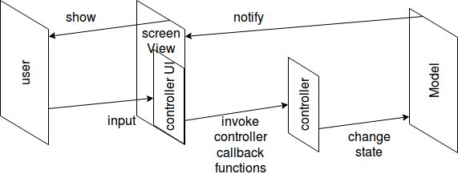

Introduction
MVC (model-view-controller): a common architecture of software that has user interfaces.
Components
- View: how does the user see. (output layout)
- Controller: receiving user input, e.g. hit a button
- Model: software logic.
- (User: modifying controller according to the view)
Interaction between components
- Controller -> Model: controller changes model's state according to user's input.
- Model -> Controller: No
- Model -> View: model notifies the view that its state has been changed
- View -> Mode: view checks model state and updates its content towards the user.
- View -> User: view shows contents to user.
- User -> View: No
- User -> controller: user control the controller
- Controller -> user : No
* The controller's UI is part of the view

* The controller can also comes from the keyboard, mouse and other input sources.